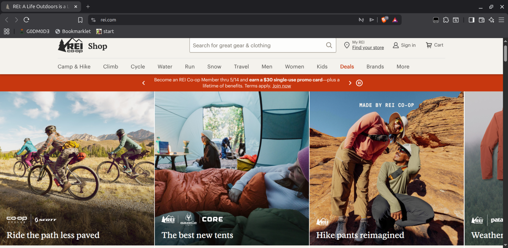
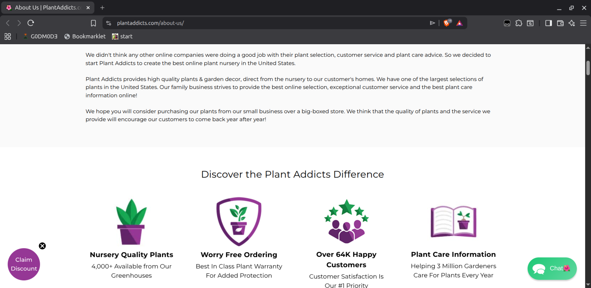

Page-by-Page Research
1) Home Page vs REI Home
Reference link:
https://www.rei.com/
Checked on: 28 Mar 2026, 10:00 AM (NPT)
Our Home Page Screenshot

Researched Page Screenshot

Similarity: 70% (Both designs feature a prominent, full-width hero image with overlaid text to immediately grab attention, along with a clean layout for sectioning content).
Difference: REI’s design uses a complex navigation system and dense product carousels to showcase scale, whereas our design opts for a minimal, single-column flow with large whitespace suitable for a simple presentation.
2) Products Page vs Amazon
Reference link:
https://www.amazon.com/
Checked on: 5 Apr 2026, 2:15 PM (NPT)
Our Page Screenshot

Researched Page Screenshot

Similarity: 75% (Both use a card-based UI for product displays, featuring a consistent image-to-text ratio and clear pricing typography).
Difference: Amazon's layout is heavily cluttered with sidebars, filter panels, and dense data grids. In contrast, our layout uses a clean, sparse grid with larger padding and minimal text to focus strictly on visual presentation.
3) Blog Page vs Urban Jungle Bloggers
Reference link:
https://www.urbanjunglebloggers.com/
Checked on: 30 Mar 2026, 11:30 AM (NPT)
Our Page Screenshot

Researched Page Screenshot

Similarity: 70% (Both designs utilize a standard article layout with a dominant header image, clear typography hierarchy, and ample line spacing for readability).
Difference: Urban Jungle employs masonry grids and sidebar widgets for related posts, while our design relies on a straightforward, sequential list of articles to maintain a highly simplified visual experience.
4) About Page vs Plant Addicts About
Reference link:
https://www.plantaddicts.com/about-us
Checked on: 12 Apr 2026, 9:45 AM (NPT)
Our Page Screenshot

Researched Page Screenshot

Similarity: 68% (Both pages follow a split-section design approach, combining text-heavy storytelling blocks alongside structured contact forms).
Difference: Plant Addicts uses a wider variety of background colors and floating images to separate sections, whereas our design maintains a uniform background with distinct boxed containers.
5) Research Page vs Yelp Directory Style
Reference link:
https://www.yelp.com/
Checked on: 18 Apr 2026, 3:00 PM (NPT)
Our Page Screenshot

Researched Page Screenshot

Similarity: 65% (Both utilize a list-based directory structure where items are grouped into distinct, repetitive visual blocks or cards).
Difference: Yelp’s design includes dynamic UI elements like star ratings, dropdowns, and interactive maps. Our design strictly uses static, side-by-side image comparison grids.
6) Site-wide Features: Nav Bar & Hero Section vs Apple/W3Schools (Beginner Focus)
Reference link:
https://www.w3schools.com/
Checked on: 28 Apr 2026, 10:00 AM (NPT)
Our Nav Bar & Hero
Top Navigation Bar
Links: Home | Products | Blog | Research | About | ☰ Cart
Hero Section
Big Welcome Text & Background Image
Researched Nav Bar (W3Schools style)
Top Navigation Bar
Logo | HTML | CSS | JS | Search 🔍 | Login
Main Section
Learn to Code Text & Search Bar
What we researched (Beginner friendly): A "Nav Bar" (Navigation Bar) is the menu at the top of the page that helps you jump to different pages. A "Hero" or "Background Slider" is the big image you see at the top of a page to grab attention. Every page needs an easy-to-use Nav Bar!
Similarity: 80% (Both employ a top-anchored, horizontal navigation bar for persistent access, paired directly with a high-contrast hero banner below it).
Difference: W3Schools' design features a complex dual-layer navigation with dropdowns and search inputs. Our design is a single-layer, flat navigation with only primary text links to preserve a minimalist aesthetic.